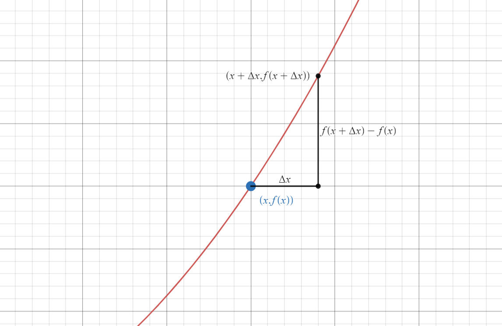

Visualizing the Impossible
Numerically Approximating the Time Dependent Schrödinger Equation for Computer Visualization
By Liam Ilan
Some things don’t make sense. Here’s an example:
When I first heard this, it just didn’t sit right. It seemed as absurd as saying that something can be both blue and brown, or that a ball can tunnel through a wall, or that a cat can be both alive and dead at the same time.
This article's goal is to make sense of this conundrum. In the proccess, we will learn how to use the finite difference method to numerically approximate the time dependent Schrödinger equation. Such approximations are used to make animations like:
The Wave Function
Let’s start with the statement above, light is both a particle and a wave. What do we mean by this?
Photons, electrons, and in fact all elementary particles, are like disturbances in a pond. They exhibit wave phenomena (relection, diffraction, interference, doppler effect, etc.). This "pond", that an elementary particle exists in, is called a quantum field, and it exists all around us.
These disturbances in the field, also known as matter waves, are described by the complex valued wave function, \(\psi(x, t)\). The magnitude of this wave function is related to how likely we are to observe a particle at any given position. More specifically, the probability distribution function describing the position of the particle is, $$|\psi(x, t)|^2$$
It thus makes sense that \(|\psi(x, t)|^2\) should follow the same rules that probability distribution functions do. Specifically, the the sum of all probabilities that the particle is observed at any given point, must be equal to 100%, or $$\int_{-\infty}^{\infty} |\psi(x, t)|^2 \,\partial{x} = 1$$ We will use this property later on to increase the accuracy of our animations.
The Schrödinger Equation
But how do we find valid matter waves to animate? Valid solutions to the wave function can be found via the time dependent Schrödinger equation, $$i \hbar \frac{\partial}{\partial t} \psi(x, t) = -\frac{\hbar}{2m} \frac{\partial^2}{{\partial x}^2} \psi(x,t) + V(x)\psi(x,t)$$ where \(\psi(x, t)\) is the wave function, \(\hbar\) is the reduced planck's constant, \(m\) is the mass of the particle, and \(V(x)\) is the potential energy at a given point \(x\).
Deriving this equation is not within the scope of this article, however, an excellent resource on the topic can be found here.
The time dependent Schrödinger equation appears extremely daunting, and if you’re like me, solving it seems impossible. Luckily, we don’t need to solve it. If we set the problem up correctly, we can let a computer do it for us.
Potential Energy
Before we try to solve the Schrödinger equation, we have one last term to define, \(V(x)\). We said earlier that \(V(x)\) is the potential energy at a given point, but what does that mean?
Let’s go back to classical physics, a ball, and a hill.

At any point in space, we can calculate the potential energy of the ball, as a function of horizontal displacement, $$V(x) = mgh(x)$$
From there, we can plot the potential energy,

Notice how \(V(x)\) represents how much energy is needed to get from a point of \(0\) potential, to a point \(x\). A point with a higher potential requires more energy to get to.
In the Schrödinger equation, \(V(x)\) is similar to the above example. We are still representing the quantity of potential energy, however this time, instead of having a hill, we might have an insulating layer, stopping current in a circuit. This insulating layer would have a higher potential, as more energy is required to move through it.
One of the important things to note is that the term \(V(x)\) is potential energy, not voltage. Voltage measures a quantity of energy per charge. Here, we measure a quantity of energy, period.
At the start of the animation, the probability distribution appears normal (blue line). When the particle hits the barrier, various partterns appear in the probability distribution as a result of the reflection wave phenomenon exhibited by the matter wave (in green and yellow).
Approximating the Schrödinger Equation
Now that we have defined all our terms, let’s go back to the Schrödinger Equation, $$i \hbar \frac{\partial}{\partial t} \psi(x, t) = -\frac{\hbar}{2m} \frac{\partial^2}{{\partial x}^2} \psi(x,t) + V(x)\psi(x,t)$$ This is a second order partial differential equation, and while we could try to find exact analytical solutions, it seems like a lot of work... So let’s not do that!
Instead, we can find approximate solutions, that, for the sake of animations, are indistinguisable from the analytical result. It’s good enough, to be close enough.
The Finite Difference Method
The goal of the Finite Difference Method, is to take continuous derivatives, such as those found in the Schrödinger equation, (\(\frac{\partial}{\partial t} \psi(x, t)\) and \(\frac{\partial^2}{{\partial x}^2} \psi(x,t)\)), and transform them into discrete, computable functions.
To do this, let’s go back to fundamentals, with the definition of a derivative, $$\frac{d}{dx} f(x) = \lim_{\Delta x \to 0} \frac{f(x + \Delta x) - f(x)}{\Delta x}$$
In this definition of the derivative, we use infinitesimally small values of x. The problem is that we can’t do that on a computer. What we can do however, is use very very small, finite steps, to approximate the derivative. This is where the “Finite Difference Method” gets its namesake.
We can use this to find the first time derivative of the wave function, present on the left side of the Schrödinger equation, $$\frac{\partial}{\partial t} \psi(x, t) = \lim_{\Delta t \to 0} \frac{\psi(x, t + \Delta t) - \psi(x, t)}{\Delta t}$$
Now, let's take the second spatial derivative present on the right hand side of the Schrödinger equation. The first step, is to find the first spatial derivative. Let’s repeat the same process we did for the time derivative, $$\frac{\partial}{\partial x} \psi(x, t) = \lim_{\Delta x \to 0} \frac{\psi(x + \Delta x, t) - \psi(x, t)}{\Delta x}$$
Uh oh... we have a small problem here. In our animation, time only moves one way (forward), so we can say it behaves asymmetrically. In contrast, space in our animation exists in two directions (\(+x\) and \(-x\)). The derivative we have been working with so far has been asymmetric. Before we can move forward, we will need a symmetric definition for the derivative, $$\frac{d}{dx} f(x) = \lim_{\Delta x \to 0} \frac{f(x + \Delta x) - f(x - \Delta x)}{2 \Delta x}$$ You will find that this definition is, for infinitesimally small steps, identical to our first definition (minus a few edge cases), however for finite steps, this definition is spatially symmetric.


Now, we can find the first spatial derivative of \(\psi(x,t)\), $$\text{let } D(x, t) = \frac{\partial}{\partial x} \psi(x, t) = \lim_{\Delta x \to 0} \frac{\psi(x + \Delta x, t) - \psi(x - \Delta x, t)}{2 \Delta x}$$ And the second derivative, $$ \begin{aligned} \frac{\partial^2}{{\partial x}^2} \psi(x, t) &=\frac{\partial}{\partial x} D(x, t)\\ &=\lim_{\Delta x \to 0} \frac{D(x + \Delta x, t) - D(x - \Delta x, t)}{2 \Delta x} \\ &= \lim_{\Delta x \to 0} \frac{\frac{\psi(x + 2\Delta x, t) - \psi(x, t)}{2 \Delta x} - \frac{\psi(x, t) - \psi(x - 2 \Delta x, t)}{2 \Delta x}}{2 \Delta x} \\ &= \lim_{\Delta x \to 0} \frac{\psi(x + 2 \Delta x, t) - 2 \psi(x, t) + \psi(x - 2 \Delta x, t)}{4 {\Delta x}^2} \\ &= \lim_{\Delta x \to 0} \frac{\psi(x + \Delta x, t) - 2 \psi(x, t) + \psi(x - \Delta x, t)}{{\Delta x}^2} \\ \end{aligned} $$
From here on out, we will drop the limits to reflect the fact that we are using finite steps.
We can now rewrite the Schrödinger equation with our substitutes for the derivative. $$ i \hbar \frac{\psi(x, t + \Delta t) - \psi(x, t)}{\Delta t} = -\frac{\hbar}{2m} \left( \frac{\psi(x + \Delta x, t) - 2 \psi(x, t) + \psi(x - \Delta x, t)}{{\Delta x}^2} \right) + V(x)\psi(x,t) $$
And then rearrange this formula, such that \(\psi(x, t + \Delta t)\) is isolated, $$ \begin{aligned} \psi(x, t + \Delta t) &= \left(\frac{1}{2m} \right) \left(\frac{\Delta t}{{\Delta x}^2} \right) \left( \psi(x + \Delta x, t) - 2 \psi(x, t) + \psi(x - \Delta x, t) \right) \\ &- \left(\frac{i}{\hbar}\right)(\Delta t)V(x)\psi(x,t) \\ &+ \psi(x,t) \end{aligned} $$
This formula let's us predict the value of \(\psi\) (the wave function) in a future timestep, in terms of the current state of \(\psi\). By recursively applying this formula, we can obtain wave functions further than one timestep away.
Initial Value
But what about that initial value? The algorithm we built let's us calculate states of \(\psi\) in terms of it's past states, but at \(t=0\), there is no past state of \(\psi\). We need some some set of initial conditions that represents the information we have on the particle at \(t=0\).
A commonly used initial value is the Gaussian Wave Packet. The Gaussian Wave Packet has a very important property that makes it a good choice for initial conditions, which is that taking the magnitude of the gaussian wave packet, and squaring it, results in a normal probability distribution, thus, if we were to observe a particle at some position \(x_0\), this distribution would tell us how likely we would be to find the particle again at any point \(x\). Because of this, it reflects the initial information we have on the particle. The formula for the Gaussian Wave Packet is, $$\psi(x, 0) = \left(e^{ikx}\right)\left(e^{-\frac{1}{2}\left({\frac{x-x_0}{\sigma}}\right)^2}\right)$$ where \(\sigma\) is the standard deviation of the wave packet, \(x_0\) is the initial mean, and \(k\) is the wave number.
The wave number (\(k\)) is important for a couple of reasons. First, it is linearly correlated to the momentum of the particle, $$p = \hbar k$$ Second, it is inversely proportional the wavelength of the particle, $$k = \frac{2 \pi}{\lambda}$$ A negative \(k\) will result in momentum in the negative direction, and a positive \(k\) will result in momentum in a positive direction.
Kinks in the System
While theoretically correct, the math above is not enough to approximate the time dependent Schrödinger equation. We are missing two more components to our solution, normalization, and boundary conditions.
Normalization
One limitation of real computers is that numbers and operations are not always percise, as computers are constrained with how much memory they can assign to any given number. As we recursively apply our algorithm, numerical instability will arise, thus the condition we laid out at the very start of this article, $$\int_{-\infty}^{\infty} |\psi(x, t)|^2 \,\partial{x} = 1$$ may no longer hold true.
In order to correct for this, after each application of our algorithm, we normalize \(\psi\). The process is as follows, $$ \text{let } \psi_0 = \text{the resulting wave function after an iteration of our algorithm} $$ $$ \text{let } I = \int_{-\infty}^{\infty} |\psi_0(x, t)|^2 \,\partial{x} $$ We can rearrange this, $$I^{-1}\int_{-\infty}^{\infty} |\psi_0(x, t)|^2 \,\partial{x} = 1$$ $$\int_{-\infty}^{\infty} \frac{|\psi_0(x, t)|^2}{I} \,\partial{x} = 1$$ Thus, $$\int_{-\infty}^{\infty} \frac{|\psi_0(x, t)|^2}{I} \,\partial{x} = \int_{-\infty}^{\infty} |\psi(x, t)|^2 \,\partial{x} = 1$$ Dropping the integrals, $$\frac{|\psi_0(x, t)|^2}{I} = |\psi(x, t)|^2$$ $$\frac{|\psi_0(x, t)|}{\sqrt{I}} = |\psi(x, t)|$$ Since \(I \in \mathbb{R}\), $$\frac{\psi_0(x, t)}{\sqrt{I}} = \psi(x, t)$$
After every single calculation using our algorithm, we can compute the resulting integral, \(I\), and apply this normalization to obtain a more accurate result, correcting for minor numerical instability.
Boundary Conditions
In the math world, we can say that the domain of \(\psi(x,t)\) is infinite. In the computer world, however, we don’t have infinite memory, so we need to set bounds to our simulation.
There is a problem however, when attempting to evaluate \(\psi\) at a boundary.
Let’s take an example, set our left most boundary (the negative direction) to \(0\), and then try to evaluate \(\psi(0, t + \Delta t)\), $$ \begin{aligned} \psi(0, t + \Delta t) &= \left(\frac{1}{2m} \right) \left(\frac{\Delta t}{{\Delta x}^2} \right) \left( \psi(\Delta x, t) - 2 \psi(0, t) + \psi(-\Delta x, t) \right) \\ &- \left(\frac{i}{\hbar}\right)(\Delta t)V(0)\psi(0,t) \\ &+ \psi(0,t) \end{aligned} $$ In order to find \(\psi(0, t + \Delta t)\), we need to know \(\psi(-\Delta x, t)\), however, since \(-\Delta x\ \lt 0\), \(-\Delta x\) is outside the bounds of the wave function. How do we handle this?
Well, it turns out that there are a couple ways, none of which are correct or incorrect. For the animations present in this article, it is assumed that \(\psi\) at the boundary is \(0\). There are many other valid boundary conditions, including purely reflective, absorptive, and ring boundary conditions. The topic of other boundary conditions is a bit beyond the scope of this article, however is an excellent jumping off point for future work.
Some Cool Results
The algorithm described above is implemented in Python and Matplotlib here. Here are some interesting animations generated with the software,
Finally...
Let's visualize the impossible.
In classical physics, a hill with more potential energy than a particle will always stop the particle from passing.
In quantum mechanics however, this is not always the case.
What we observe here, is a particle with some energy, colliding with a barrier of significantly higher potential. Rather than the the particle being completely reflected, the particle has some probability of "tunneling" through the barrier. We call this phenomenon, quantum tunneling, one of the many cases where quantum physics makes the impossible, possible.
References
The software to generate all the animations for this article can be found here.